Walter：
- 现在，3613点已经成为中短线关键位置，因为这位置是否突破决定大盘能否延伸出日线上的向上笔，而今天的走势，由于已经突破3555点，因此，周线上形成底分型的可能性极大，除非在本周内出现再破底。因此，中线上，我们一直预言的本年度最大行情成立的几率已经越来越大。
- 今天，又一个完美的短线机会，60分钟的底分型成立，而3533点成短线关键位置，所谓的关键位置，就是站上去，大盘将继续延续反弹，也就是2次探底结束；站不住，就必然再次探底，而且破底的机会极大。
- 日线级别的对应位置在 3613 点 ， 因此 ，3533、3613、3840（60分，日，周底分型的上沿），给出了一个市场运行的密码，由此，超短、短、中的走势都完全把握了。
3462点成短线关键位置 (2008-04-02 15:17:01)
原文网址：http://blog.sina.com.cn/s/blog_486e105c01008tzx.html
今天，如期反弹，然后大幅度震荡。一般这种走势，最好就是进行对冲式操作，或者如昨天本ID所说，昨天尾盘就可以先介入。
现在，短线最关键位置在3462点 （60分钟底分型上沿)，明白本ID的理论的，都知道在这位置为什么重要。今天下午冲到该位置，站不住，所以就出现大幅度震荡。但尾盘依然有资金再度介入，这样，这次反弹可以再来一次，高位出的下来又可以回补再来一次。
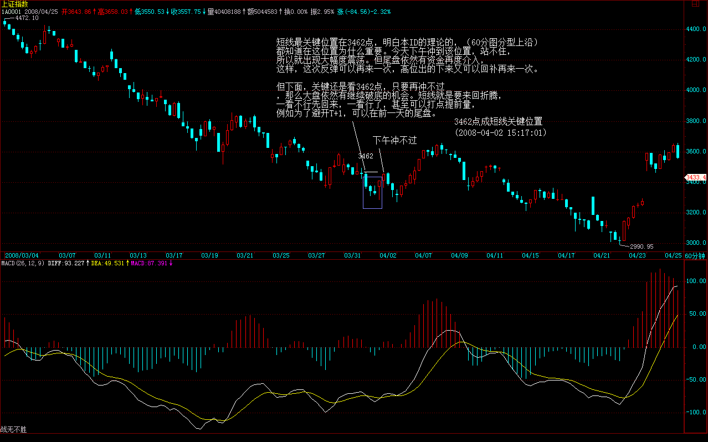 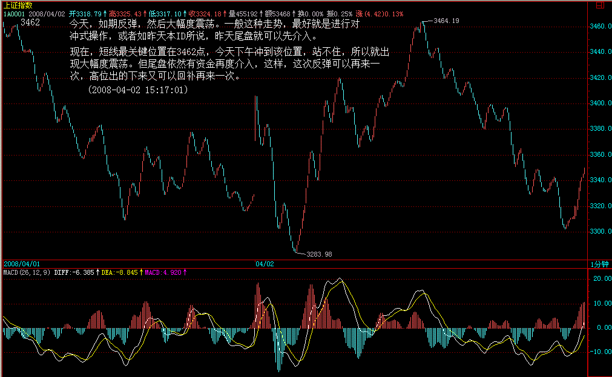
但下面，关键还是看3462点，只要再冲不过，那么大盘依然有继续破底的机会。短线就是要来回折腾，一看不行先回来，一看行了，甚至可以打点提前量，例如为了避开T+1，可以在前一天的尾盘。
个股方面，金融股已经率先走强，但这走强是否有延续性，是否能向地产、有色等蔓延，是行情能否延续的关键。题材股经过大洗盘，还会重来，但暂时以反弹为主。
这几天很难打开，系统好象也不稳定，不多写了，先下，再见。
3462点如期发挥神奇作用 (2008-04-03 15:24:59)
原文网址：http://blog.sina.com.cn/is/blog_486e105c01008uah.html
今天的走势大概出乎很多人的意外，但一定不包括本ID以及昨天看了本ID解盘的人。昨天的解盘很明确地告诉你要再来一次，请问，这一次爽吗？
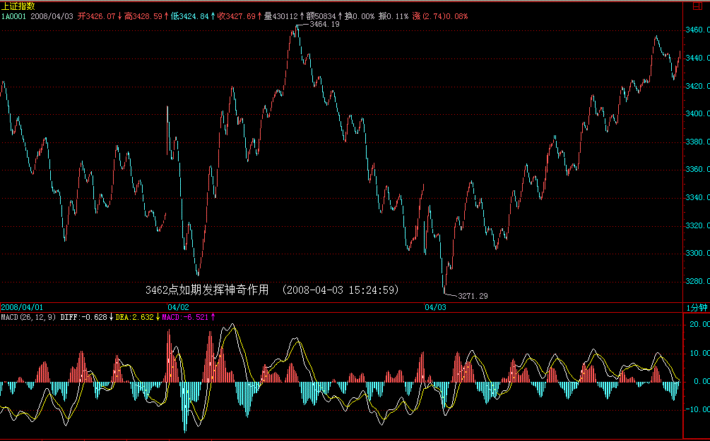
昨天，更说了金融向地产或有色等蔓延的问题，今天，那聪明的驴的表现，请问爽了没有？有人昨天说，不是题材股吗？但难道这些云铝中铝不是本ID股票池子里的？50、60跑的，20下买点回来，难道有罪呀？简直病的不轻。
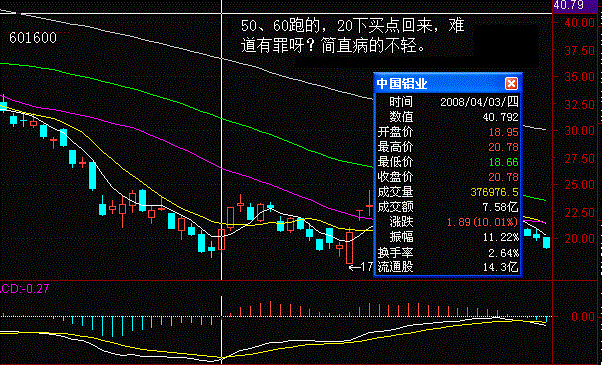
兵无常形，如果要走一波本年度最大级别的向上走势，中字头不启动怎么可能完成？题材股当然要继续，但一波完整的行情，就是一、二、三线的轮动次序，这不最简单的道理，有什么可说的？
当然，这一切暂时还只是蓝图，因为实际的行情并没有走出来，暂时先当成反弹来干是比较靠谱的，一旦形势不对，反手狠砸，不亦快哉？
显然，昨天说的3462点，今天起了明显的作用，大盘最终在该点位前放下步伐。由于今天搏消息的比较多，所以尾盘小跳让人出来也是应该的。
下周是很关键的一周，因为日以及周是否能底分型，就看这了。当然，短线这一切，都可以简化为3462点能否有效站住的问题，一旦能站住，这些分型都不成为问题了。
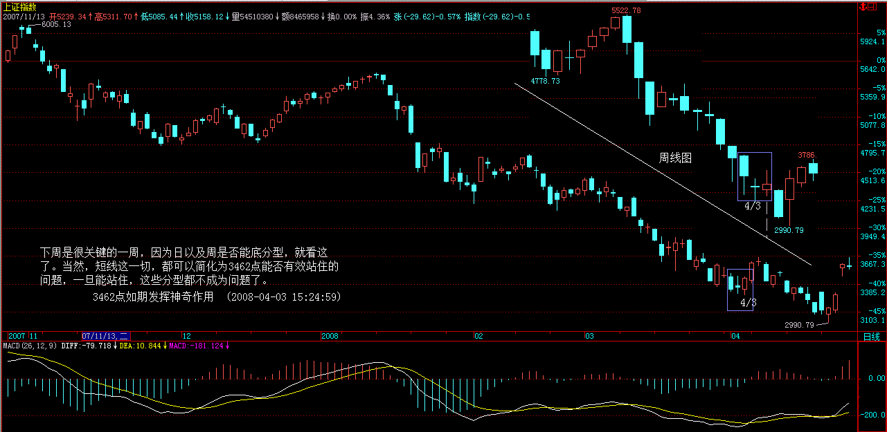
个股方面，注意一线股的轮动次序，注意新资金流向。另外，如果周一没消息，注意回杀力度，如果力度不大，反而证明这行情真有戏了。
今天的走势图，超级技术化，留一个作业：13点30分到2点这段时间具体什么的技术意义，为什么一站住某位置后，就马上出现大的突破，向上攻击3462点。(注：缠师的作业的答案是60分钟分型上沿突破，突破后延伸出笔，但是趋势线的意义在此图中也很经典，故保留后图）
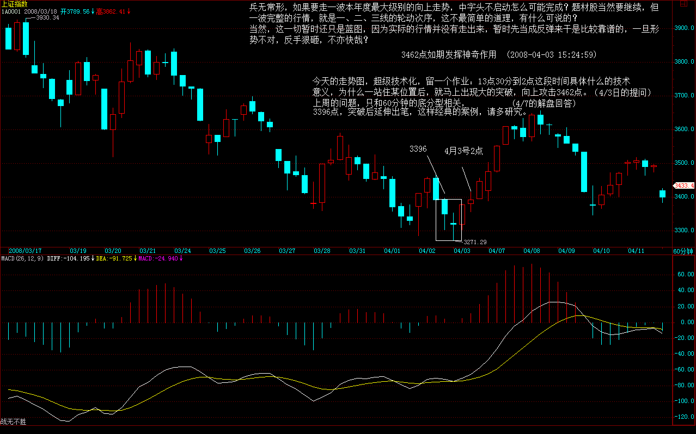 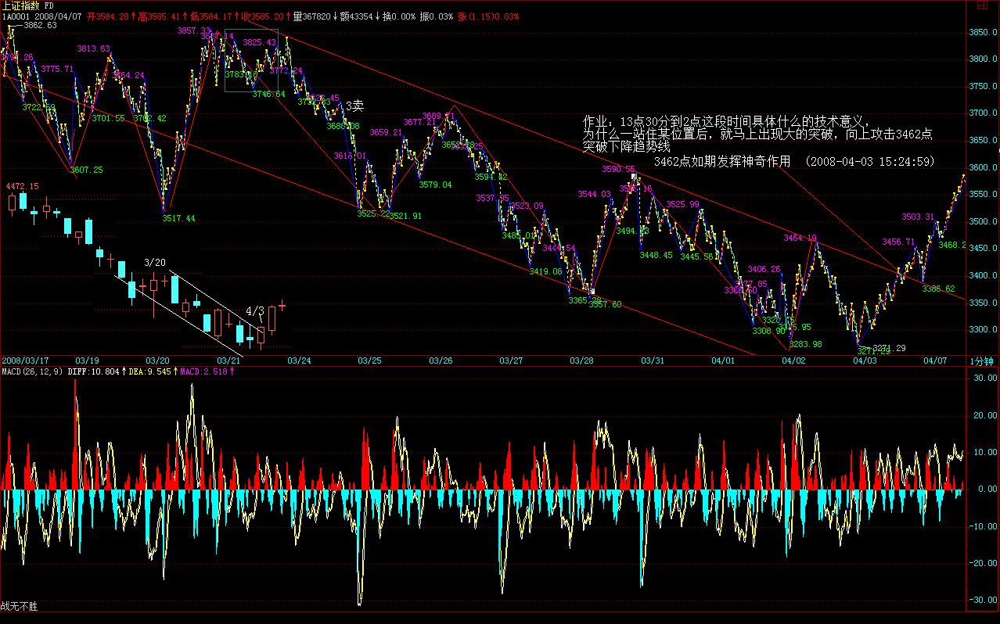
提前一天收市，简直太美好了，清明时节雨纷纷，水为财。
先下，再见。
3613点成中短线关键位置 (2008-04-07 15:21:25)
原文网址：http://blog.sina.com.cn/s/blog_486e105c01008vnl.html
大盘今天突破短线关键位置3462点后一马平川，60分钟上N个月来第一次延伸出向上笔走势，显然了大盘的短线强势。
 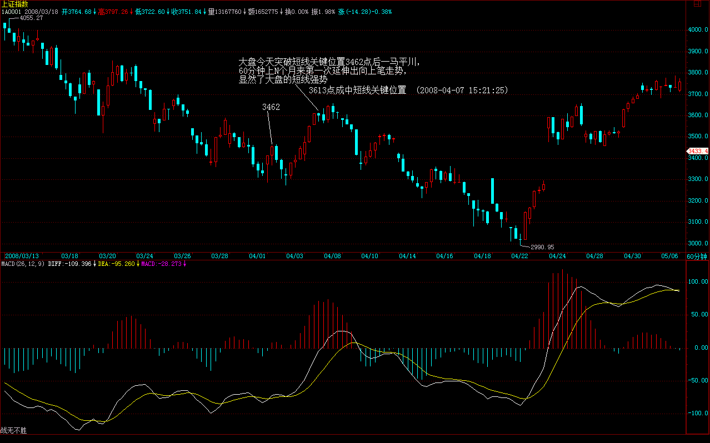
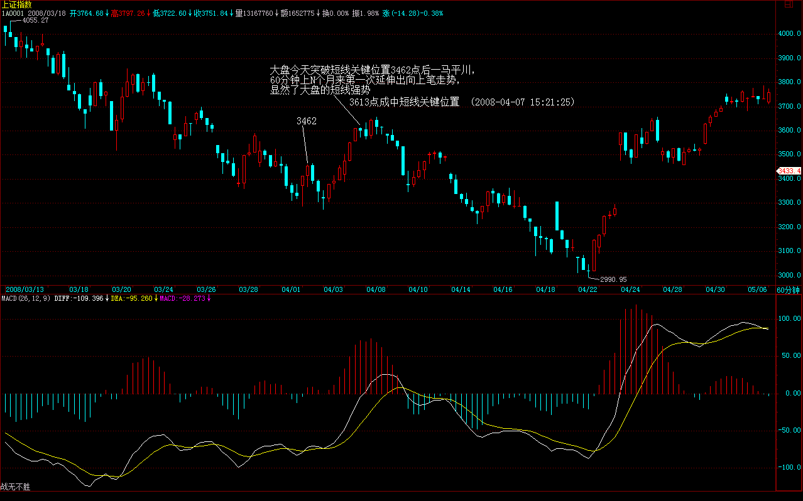
周五解盘已经特别指出，如果周末没消息而大盘反应并不过烈，反而证明大盘行情真有戏了，今天的走势恰好证明了这一点。个股方面，中驴为代表的有色继续驴性大发，但要注意，这次启动的板块，都是回弹20-30%左右进入调整，例如地产、金融等，因此，有色能否改变这局面，暂时是有疑问的。
现在，3613点已经成为中短线关键位置，因为这位置是否突破决定大盘能否延伸出日线上的向上笔，而今天的走势，由于已经突破3555点，因此，周线上形成底分型的可能性极大，除非在本周内出现再破底。因此，中线上，我们一直预言的本年度最大行情成立的几率已经越来越大。
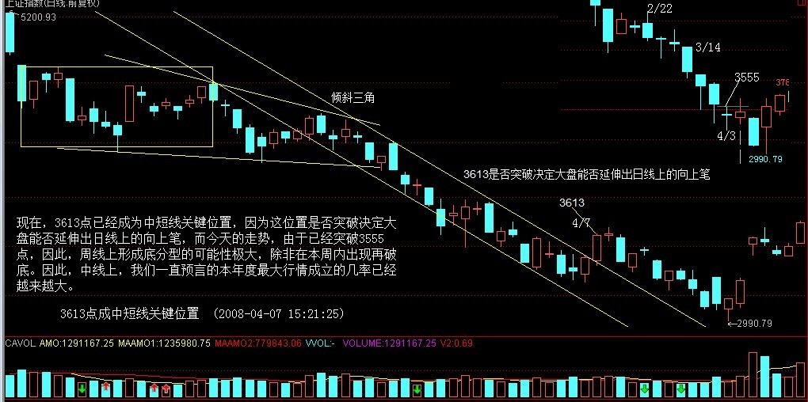
当然，最安全的作法还见一步走一步，只要3613点攻击不破，就可以先对筹码进入相应调整，以应付后面的震荡走势。
虽然本ID一早就明确3424点附近将出现中线底部，但真走出来，我们反而要冷静。不能在操作上留下遗憾。而且，如果真是中线底部，在真正突破之前，洗盘震荡还少不了，所以，一定要按图作业。
上周的问题，只和60分钟的底分型相关，3396点，突破后延伸出笔，这样经典的案例，请多研究。
先下，再见。
中国人，不要习惯性当政府的奴才。 (2008-04-07 16:05:58)
原文网址：http://blog.sina.com.cn/s/blog_486e105c01008vo2.html
几千年来，中国人在政府、衙门面前就从来没抬起过头，即使改朝换代，最终这奴才心理还是改不了。
而实质上，政府、衙门是我们的奴才，没有我们，哪里有什么政府、衙门，是我们的血汗供养了这些机构。面对这些机构，任何人都应该腰杆笔直。
可惜，实质上，绝大多数的人还是不自觉地、完全集体无意识地当了政府、衙门的奴才，例如，在资本市场上，例如现在还在叫嚣的救市言论。
本质上，根本不存在政府衙门那种从上而下施舍性的救市，问题的实质，只是要让这些奴才改正他们的错误，当然，如果奴才不好听，那么，我们就用公仆这个词。
没有救市，也无须救市，有的只是纠错。错了就要承认，就要改，就这么简单。
可惜，大多数的人的思维都扭了，都在等待所谓的施舍，这样，中国的资本市场、中国的现代化真是遥遥无期了。
衙门型的管理机构与服务型的管理机构相比，最大的特点就是行为完全脱离实际，所有的应对措施都严重慢几拍。例如，过去两年，面对快速的上涨，最简单的经济学常识都可以提供最简单有效的应对措施，就是快速加大供给。而供给的加大是要有时效性的，过了那时间，这措施就对不上点了。那么，请看实际上管理机构不仅没有加大供给，反而是提供了流通比例极低的疑似非法蓝筹，这难道不是典型的火上加油吗？
衙门型管理机构，甚至可以有这样一种可怕的思维，跌比涨好，跌就是安全，资本市场里的人的行为最好都完全统一到银行存款行为上去，这样就不惹事，不惹事就是最大的好事。正因为这十几年那如此思维的存在，因为中国的资本市场走势都显示出最大的投机性，因为大家都知道上涨的时日无多，一旦有机会就变本加厉地投机，尽量在最短时间内把最大的利润拿到手。
正因为管理层与投资者的心态都在这样一种氛围下，所以，那种稳健的长线行情就不可能真正出现，大起大落成为真正的常态。而这时候，还提防止市场大起大落就成为一件很滑稽的事情，成为衙门型管理机构语言的一个标准范本。请问，一年不到，从3400点到6124点又回到3400点还不是大起大落？一个已经是事实的东西，还能或还需要防止什么？
我们不希望再有类似的无聊衙门言论，我们也希望我们所有的投资者都要站立起来，知道自己的力量，市场是我们创造的，我们是市场的真正创造者，我们才是市场真正的主人，我们必须要用我们的力量彻底改变这一切。
3613点如期发挥神奇作用 (2008-04-08 15:19:39)
原文网址：http://blog.sina.com.cn/s/blog_486e105c01008vx3.html
昨天给了短线的关键位置3613点，今天全天就是围绕着震荡，连收盘就在3612.5就知道，该点确实如期发挥了作用。
现在的问题很简单，站得住3613点，就继续上攻，否则就出现一个大的调整。所以，本周就看着该点就可以了。
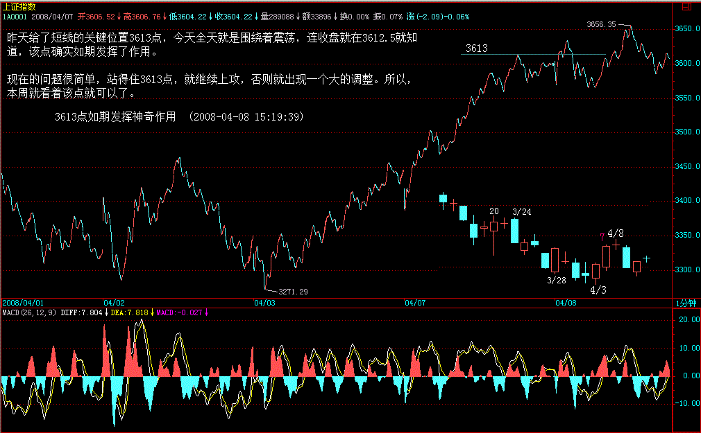
个股方面，板块轮动加速，现在问题的关键是轮动后首先调整的板块能否再次启动，能，那大盘就肯定有戏，否则至少要调整一下。
目前，整个次序大致是地产、金融、有色、券商，然后今天是所有几乎大的题材都动了一下，创投、农业、三通、环保等等，因此，后面还是要看金融地产能否再次启动。
当然，一些小板块的轮动还会继续，但对于大局，这些都没多大的意义。行情，关键要看大角度。
大家应该注意到，本ID最近一直只用给级别的分型来统一进行分析，其实就是想告诉各位，你把一招真学会了，绝大多数的问题都能解决，这就是示范，请把这次整个探底到回升的整个过程好好研究，课程等这个示范以后再写。
不想说了，留点精力今晚熬夜看球，先下，再见。
3613点威力尽显 (2008-04-09 15:16:57)
原文网址：http://blog.sina.com.cn/s/blog_486e105c01008w7m.html
今天的走势极端技术化，前面已经明确说了，只要站不住3613点，就要再次探底。今天低开后，在60分钟刚好跌破顶分型的(顶)下边，早上那标准的回抽，极端显然地上不了3613点，因此确认这对顶分型下边的跌破是有效的，因此后面的下跌就顺理成章了，为什么？因为向下要形成笔。
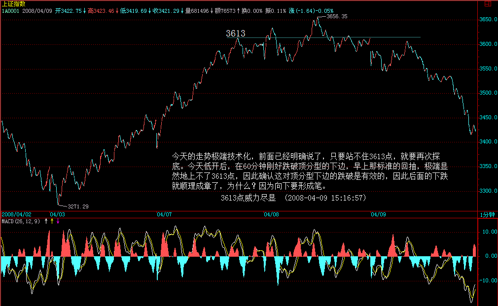
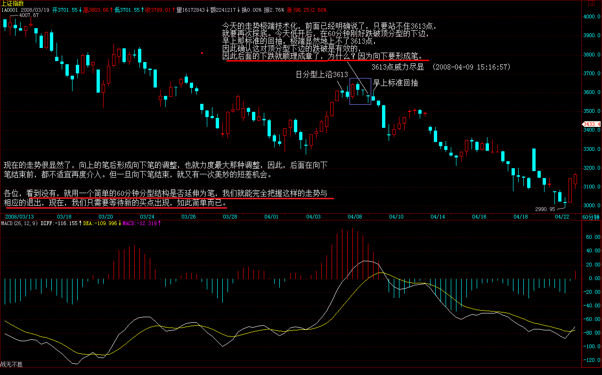
现在的走势很显然了，向上的笔后形成向下笔的调整，也就力度最大那种调整，因此，后面在向下笔结束前，都不适宜再度介入。但一旦向下笔结束，就又有一次美妙的短差机会。
各位，看到没有，就用一个简单的60分钟分型结构是否延伸为笔，我们就能完全把握这样的走势与相应的退出，现在，我们只需要等待新的买点出现，如此简单而已。
个股方面，昨天已经明确说了，只要地产不能重新启动，就有问题，今天万科等的走势，一个标准的短线多头陷阱，因此，引发回跌再正常不过了。
当然，就算有真行情，也需要大的洗盘，但是否洗盘还是继续下跌，其实根本不重要，我们只关心下一个买点，把走势支解了进行操作，我们不废那个脑子。
让脑子有水的人继续争论是否有真的行情，他们负责争论，我们负责挣钱，还有精力的，今晚继续加班看球。
先下，再见。
3533点成短线关键位置 (2008-04-10 15:25:06)
原文网址：http://blog.sina.com.cn/s/blog_486e105c01008wgk.html
网络超级慢，登陆就用了10几分钟，什么写东西的心情都没有了。随便说两句。
今天，又一个完美的短线机会，60分钟的底分型成立，而3533点成短线关键位置，所谓的关键位置，就是站上去，大盘将继续延续反弹，也就是2次探底结束；站不住，就必然再次探底，而且破底的机会极大。
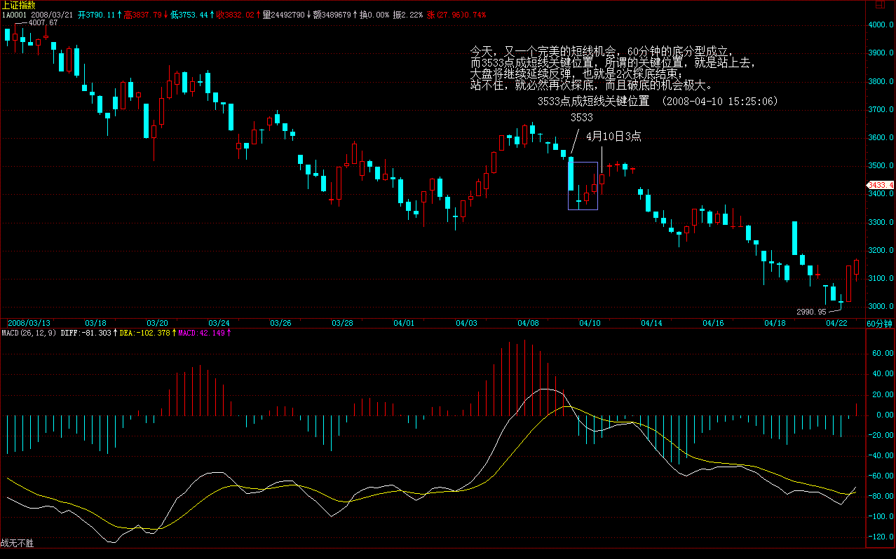 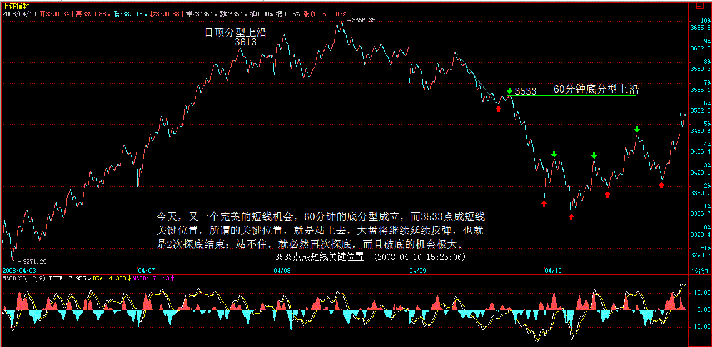
今天，煤炭、券商、滨海等甚至创出本次反弹的新高，这是好现象，证明至少有部分资金是勇敢做多了。现在，指数上要有大突破，还是要看金融、地产、有色等，不过先有板块裸奔起来，绝对是好现象。
思维要改，今年的行情不会是一条直线的，底部也要震荡个N回才爽的，不明白这点，就痛苦去吧。
注意节奏，自然就爽。
这破网，按一下，N久才有反应，简直浪费时间，
不想写了，先下，再见。
周底分型成立令3840点成中线关键 (2008-04-11 15:10:56)
原文网址：http://blog.sina.com.cn/s/blog_486e105c01008wqv.html
本周折腾，最后的结果还是把周底分型给折腾出来了，该分型的上边在3840点，因此，该分型是否最终有效，延伸为向上笔，或者最终失败，只构成中继型，3840点就成了周级别的关键位置了。
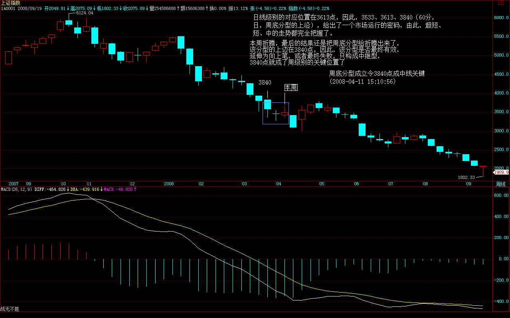
今天，大盘全天在昨天所说的3533点下震荡，显示大盘不强，信心不足，大概是周末的心理压力，因此，下周初，就看这60分钟级别的关键位置能否突破，不行，就再次探底。
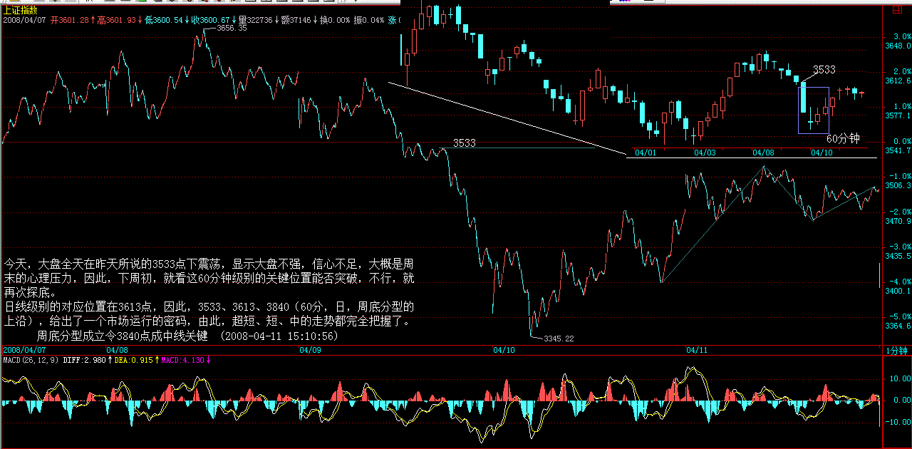
日线级别的对应位置在3613点，因此，3533、3613、3840（60分，日，周底分型的上沿），给出了一个市场运行的密码，由此，超短、短、中的走势都完全把握了。
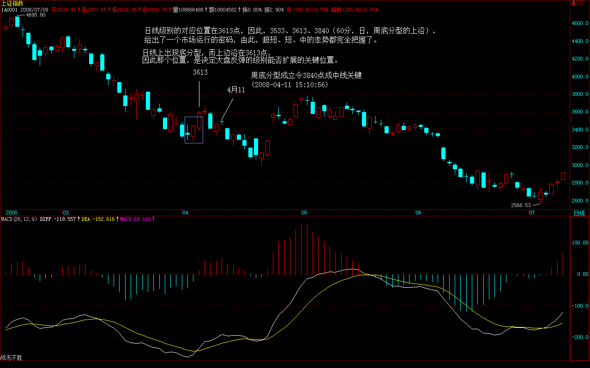
个股方面，板块继续轮动，但力度有所减弱，现在，只要金融、地产等不再次动起来，大盘就不会有大戏。
周末，快点远离股票，好好休息，身体第一。
先下，再见。